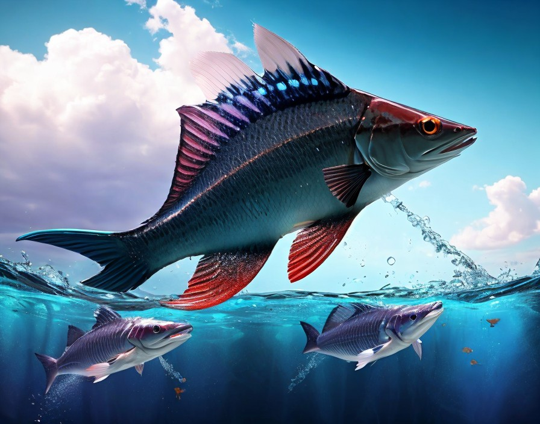

Description: These sleek, predatory creatures glide effortlessly through the waters of Cerulea, preying on smaller fish and crustaceans. They are highly intelligent and exhibit cooperative hunting behavior. Aqualisks have a lifespan of around 30 Earth years.
Planet: Cerulea